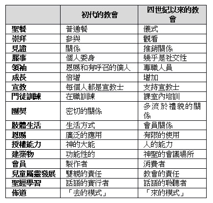

後疫情時代的覺醒與因應
2021年07月25日
經文：(詩篇14篇 / 53篇)
|
小組目標
- 檢視教會觀：敬拜、崇拜、奉獻、服事、團契、傳福音等信仰生活的意義。
- 活用RPG禱告精神，使禱告生活、小組牧養帶來更新與改變
- 記得提早line提早⼤家聚會
- 提早預備好群組視訊
一、凝聚（每⼈1-2分鐘）
Q:我們會介紹人來的教會(信義會靈糧堂)的原因是什麼？(你期待他成為什麼樣的基督徒？如何才能帶他長成你期待中的樣式？)
二、榮耀：感謝讚美5~7輪：只要感謝，先不要祈求。
三、成長
14:1 愚頑人心裏說：沒有上帝。他們都是邪惡，行了可憎惡的事；沒有一個人行善。
※「愚頑」是指不能謙卑地領受真理，剛愎自用的性情與氣質。
14:2 耶和華從天上垂看世人，要看有明白的沒有，有尋求上帝的沒有。
神渴慕人能明白祂的心意
14:3 他們都偏離正路，一同變為污穢；並沒有行善的，連一個也沒有。
14:4 作孽的都沒有知識嗎？他們吞吃我的百姓， 如同吃飯一樣，並不求告耶和華。
他們活在自己的標準當中，甚至評價上帝…等於自認為自己比上帝知道得更多。不求告神，不論是「不知道」或是覺得「不需要」因而做出的錯誤決定，他們終將經歷羞愧。
14:5 他們在那裏大大地害怕，因為上帝在義人的族類中。
14:6 你們叫困苦人的謀算變為羞辱；然而耶和華是他的避難所。
14:7 但願以色列的救恩從錫安而出。耶和華救回他被擄的子民那時，雅各要快樂，以色列要歡喜。
屬上帝的兒女雖然會經歷風浪，但是也會經歷上帝是避難所，我們要經歷勝過風浪的喜悅與最終的勝利。
四、出發：用有感動的經文為自己和家人祝福，也為別人祝福 (=RPG禱告的流程2.和3.)
五、加速：我在哪些方面，有負擔跟耶穌一起恢復合什心意的教會。

劉曉亭牧師 疫情帶來的「宗教改革」(線上聆聽)